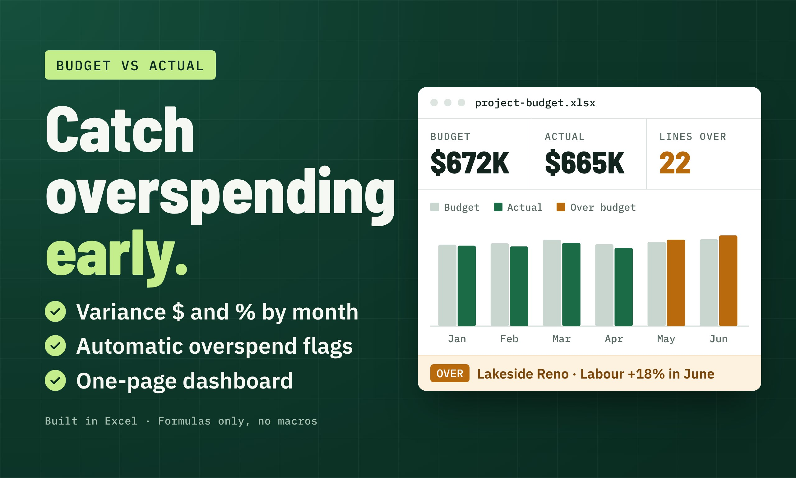

Detecta sobrecostos del proyecto antes del siguiente informe
Una guía de un control presupuestario ficticio de varios proyectos: datos, fórmulas, alertas de diferencias y un panel fácil de actualizar.

El problema de los informes
Una persona responsable del proyecto dispone de presupuestos planificados, gastos reales exportados y varios responsables. Sin categorías coherentes ni informes mensuales, los sobrecostos pueden quedar ocultos en grandes hojas de cálculo.
Cómo el control convierte datos en decisiones
- 01
Separar los datos editables
Mantener nombres de proyectos, períodos, categorías, presupuestos e importes reales en tablas rastreables, en lugar de fijar manualmente los totales del panel.
- 02
Calcular diferencias de forma coherente
Calcular la diferencia como gasto real menos presupuesto, y la diferencia porcentual como esa cantidad dividida por el presupuesto cuando este no sea cero.
- 03
Marcar y explicar las excepciones
Mostrar las partidas que superan un umbral ajustable, consolidar resultados por proyecto y mes e incluir una comprobación de conciliación en el resumen.
Qué comprobar en el ejemplo
El ejemplo abarca seis meses y 90 partidas presupuestarias en tres proyectos ficticios. Su panel compara presupuestos y gastos reales, con diferencias en dólares y porcentajes, y destaca los sobrecostos.
- Modifica un presupuesto o gasto y comprueba que el resumen se recalcula.
- Revisa la tolerancia de sobrecostos y prueba una categoría que supere el límite.
- Compara el resumen por proyecto con la vista general consolidada.
Limitaciones y alcance real
Este archivo ficticio es una herramienta ilustrativa de informes, no una previsión financiera, asesoría fiscal ni garantía de ahorro. Las definiciones y los umbrales adecuados dependen de los datos y procesos de cada cliente.